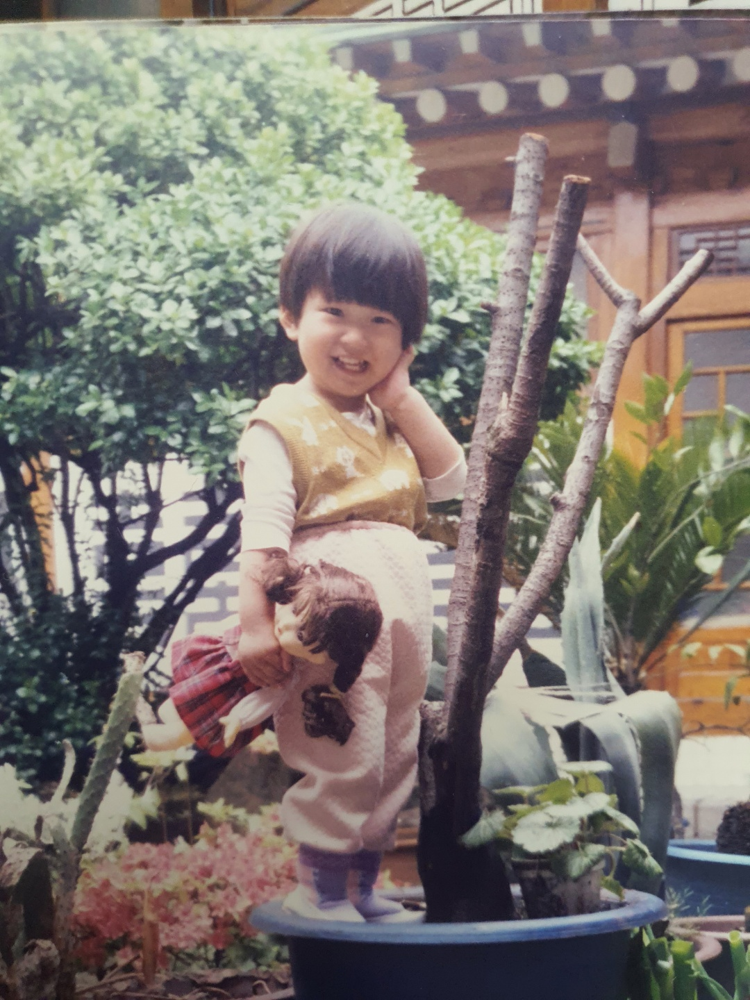

내가 태어난 곳
내가 태어난 고향은 서울시 성북구 인근입니다.
어린시절 어머니를 따라 창경궁, 대학로 인근으로 많이 놀러다니곤 했습니다.
오래 지내진 않았지만, 8세가 될때까지 살다가 먼 지방으로 이동하였습니다.
어린시절 어머니를 따라 창경궁, 대학로 인근으로 많이 놀러다니곤 했습니다.
오래 지내진 않았지만, 8세가 될때까지 살다가 먼 지방으로 이동하였습니다.
